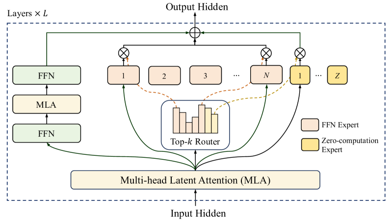
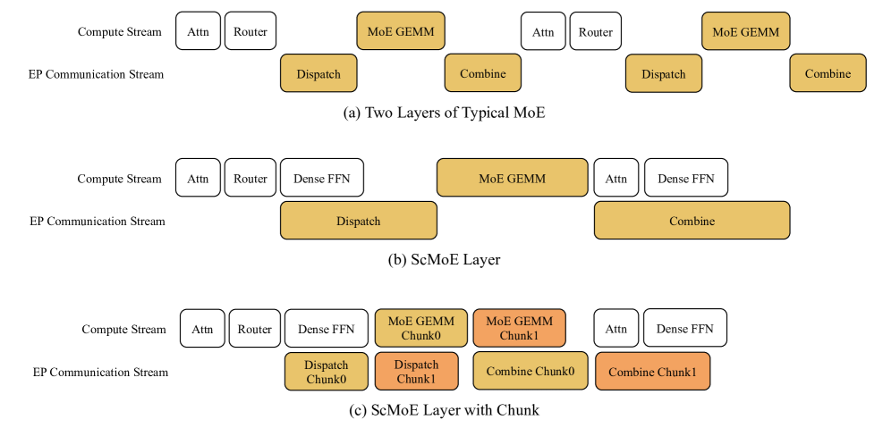
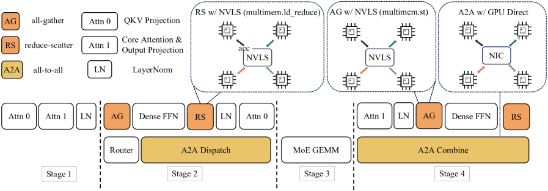

30 秒看懂
LongCat-Flash 是美团开源的一款 5600 亿（560B）总参数 的混合专家（MoE）大模型。它的核心追求只有两个字：高效——既要训练得快、又要推理得便宜，同时还要在「智能体（agentic）」任务上够强。
它靠两个架构创新做到这点：① 零计算专家（Zero-computation Experts）——让模型根据 token 的难易，动态地只激活 18.6B–31.3B（平均约 27B）参数，简单的 token 少花算力；② Shortcut-connected MoE（ScMoE）——通过一条跨层捷径，把昂贵的专家通信「藏」进相邻层的计算里，几乎不增加额外耗时。
成果：在 2 万张以上加速器 上，30 天 训练完 20T+ token；推理达到 100+ TPS、每百万输出 token 仅 $0.70；作为「非思考型」基础模型，性能比肩 DeepSeek-V3.1、Kimi-K2，且在工具调用等 agentic 任务上尤为出色。
（动态 18.6–31.3B）
（H800）
推理成本
（无人工干预）
（更浅 = 更低延迟）
要解决什么问题
把模型做大很有用，但越来越贵
DeepSeek-V3、Qwen 3、Kimi-K2 等模型已经证明：把模型规模和算力堆上去，能力确实会变强。但继续往上堆，成本 成了拦路虎。作者认为，单纯加参数已经不够，要在三件事上同时发力才能继续推进：更聪明的 模型架构、更扎实的 系统/基础设施优化、以及更系统的 数据策略。
论文从两个朴素的观察出发，去抠 MoE 模型的「浪费」：
- 并非所有 token 都一样难（Not all tokens are equal）。预测下一个词时，有的 token 很简单（小模型都能猜对），有的很难。可传统 MoE 对每个 token 都激活固定数量的专家、花同样的算力——这本身就是浪费。
- MoE 扩大后，通信成了瓶颈。专家并行（Expert Parallelism）要求先把 token「分发」到各自的专家、算完再「合并」回来。这一来一回的全局通信会让 GPU 大量时间在「等数据」，而不是在算。
于是问题变成：能不能让算力按 token 的重要性动态分配，同时把不可避免的通信开销「重叠」进计算、不再空等？
已有方案卡在哪
两种主流思路，各有天花板
LongCat-Flash 的两个创新，正是针对下面这两类已有做法的局限。点开看每种方案做了什么、卡在哪。
做了什么：MoE 把一个大 FFN 拆成很多「专家」，路由器（router）给每个 token 选 top-k 个专家来算，其余专家不激活。这样总参数可以很大，但每个 token 的实际计算量（激活参数）受控。
卡在哪：k 是固定的，意味着不论 token 简单还是困难，都激活同样多的专家、花同样的算力。简单 token 被「过度计算」，困难 token 又未必能得到更多资源——计算预算的分配和 token 的真实需求不匹配。
与本文的关系：LongCat-Flash 用 零计算专家 把「激活数量」变成可随 token 浮动的量，从而把省下的算力让给真正困难的 token。
做了什么：为缓解通信等待，一些架构设置「共享专家」（shared expert）对所有 token 都计算。理论上可以让这个专家的计算与 MoE 的通信并行，从而把通信时间「藏」起来一部分。
卡在哪：能用来重叠的「计算窗口」只有这一个共享专家那么大，太小了，掩盖不了多少通信。在传统执行顺序里，必须先把 token 通过全局通信分发到专家，计算才能开始——这条串行链路就是吞吐的天花板。
与本文的关系：LongCat-Flash 用 ScMoE 引入一条跨层捷径，重排执行流水线，让 上一层整个稠密 FFN 的计算去并行掩盖本层 MoE 的分发/合并通信——重叠窗口比单个共享专家大得多。
做了什么：训练超大模型时，直接在目标规模上搜超参代价极高，且随机初始化训练常出现不可恢复的 loss 尖峰。
卡在哪：缺少把小模型经验「可靠迁移」到大模型的理论框架；初始化方式、优化器细节（如 Adam 的 epsilon）在大尺度下会变得异常敏感，稍有不慎就训练崩溃。
与本文的关系：LongCat-Flash 用 超参迁移（width scaling 规则）+ 模型生长（14 层堆成 28 层）+ 稳定性套件（router 梯度平衡、hidden z-loss、epsilon 调优、确定性计算），让 560B 训练全程不炸。
本文做法 · 总览
一张图看懂 LongCat-Flash 的架构
LongCat-Flash 的每一层都把上面两个创新缝在一起：零计算专家 负责「该花多少算力」，ScMoE 的跨层捷径 负责「通信别空等」。再叠加对 MLA、FFN 专家做的方差对齐（variance alignment）来保证规模放大时不退化。

- 底部 Multi-head Latent Attention（MLA）：每层有两个 MLA 注意力块（图中下方黄色长条），负责让 token 之间交换信息；MLA 用低秩压缩 KV 来减小显存与 I/O。
- 左侧的稠密 FFN（绿色）：这是「常开」的稠密前馈层，所有 token 都会过。它的存在很关键——正是它的计算被用来掩盖右侧 MoE 的通信（见下文 ScMoE）。
- 中间的 Top-k Router（路由器）：柱状图代表路由打分，为每个 token 选出 K=12 个专家。橙色虚线表示打分如何映射到被选中的专家。
- 右侧专家池——两类专家：粉色块 1…N 是真正做计算的 FFN 专家（共 512 个）；黄色块 1…Z 是 零计算专家（共 256 个），它们直接把输入原样返回（恒等映射），不产生任何计算。路由器若把名额给了零计算专家，这个 token 的实际算力就降下来了。
- 顶部的跨层 shortcut（绿色长线 + ⊕）：第一个 MLA 的输出沿一条捷径直连到 MoE 块并相加。这条捷径重排了执行顺序，让上一块的稠密 FFN 能与本层 MoE 的分发/合并通信并行。
模型关键配置（点开看具体数字）28 层 / 6144 隐藏维 / 512 FFN + 256 零计算专家
| 总参数 / 平均激活参数 | 560B / ~27B |
| 激活参数动态范围 | 18.6B – 31.3B |
| Transformer 层数（不含 MTP） | 28 |
| 隐藏维度 | 6144 |
| 每层 FFN 专家 / 零计算专家 | 512 / 256 |
| 每 token 选中的专家数 K | 12（两类混选） |
| 注意力 | MLA · 64 头 · 每头 128 维 |
| KV / Query 压缩维度 | 512 / 1536 |
| 词表大小 | 131,072（BPE） |
| 上下文长度 | 扩展至 128k |
核心模块 ①
零计算专家：让简单 token 少花算力
思路非常直接：在 N 个真正的 FFN 专家之外，再加 Z 个 零计算专家。零计算专家的「计算」就是把输入原样吐出来——零成本。路由器照常为每个 token 选 K=12 个专家，但现在选的可能是「真专家 + 零计算专家」的任意组合。一个 token 被分到越多零计算专家，它实际消耗的算力就越少。
互动：不同难度的 token，激活的专家不一样
点击切换 token 难度，观察 12 个名额里有多少落到「真 FFN 专家」、激活参数如何随之浮动。
难点：怎么保证「平均算力」可控？
如果放任不管，模型会偷懒——倾向于多选零计算专家来省事，导致资源利用不足。所以必须 精确控制零计算专家被选中的平均比例，让总算力稳定在预算线上，同时又允许它在 token 之间灵活浮动。
作者的做法是给每个专家一个动态的 偏置项（expert bias），用控制论里的 PID 控制器 来调它：哪个专家最近被用得太多，就调低它的路由分；用得太少就调高。这个偏置只影响路由、不进入语言模型的训练目标，因此不会干扰模型学习。
训练约 20B token 后，所有层的「平均激活 FFN 专家数」都收敛到约 8 个（对应约 27B 激活参数），波动小于 1%；但其 标准差长到约 3——说明模型确实在不同 token 之间分配了差异巨大的算力。平均稳定、个体灵活，正是想要的效果。
此外还配了一个 设备级负载均衡损失，把所有零计算专家归到一个额外的组里单独平衡，避免某些 GPU 上的专家过载而拖慢整体训练。
核心模块 ②
Shortcut-connected MoE：把通信藏进计算里
MoE 的效率瓶颈在通信：专家并行下，必须先用一次全局 all-to-all 把 token 分发（dispatch）到各自的专家，算完再 合并（combine）回来。传统执行是串行的——通信时计算单元只能干等。共享专家方案能重叠的窗口又太小。
ScMoE 的关键是一条 跨层捷径，它重排了流水线，使得 上一块的稠密 FFN 计算 可以与 当前 MoE 层的分发/合并通信 完全并行。重叠窗口一下子从「一个专家」放大到「一整个稠密 FFN」。

- 每张图两条「泳道」：上面是 Compute Stream（计算流），下面是 EP Communication Stream（专家并行通信流）。横轴是时间，方块越往右排得越久 = 总耗时越长。
- (a) 传统 MoE：计算（Attn、Router、MoE GEMM）和通信（Dispatch、Combine）基本错开排列、互相等待，时间线被拉得最长——这就是串行执行的代价。
- (b) ScMoE 层：跨层捷径让上一块的 Dense FFN 与本层的 Dispatch / Combine 通信对齐到同一时间段并行执行，计算流和通信流开始「叠」在一起，总长度明显缩短。
- (c) ScMoE + 分块（Chunk）：进一步沿 token 维把操作切成 Chunk0 / Chunk1 等细粒度块（图中深橙），让 MoE GEMM 与 Dispatch/Combine 的重叠更彻底、几乎填满通信空隙，效率最高。
- 颜色含义：白色方块=纯计算算子；黄色/橙色方块=通信（或与通信重叠的计算块），橙色深浅区分不同的 chunk。
作者还用四组不同配置（2.4B-16B 配 MLA、3B-20B 配 MHA、15B-193B 配 GQA）做了对照实验：开/关 ScMoE 的训练 loss 曲线 几乎完全重合。这说明 ScMoE 是 「质量中性」（quality-neutral） 的——它不靠牺牲效果换速度，而且收益与注意力机制、模型规模都正交。
训练上，重叠窗口让稠密块计算与 MoE 通信完全并行；推理上，ScMoE 支撑了 单批次重叠（Single Batch Overlap, SBO） 流水线，把理论 TPOT（每输出 token 时延）相比 DeepSeek-V3 降低近 50%，还能让节点内 NVLink 通信与节点间 RDMA 通信并发，吃满网络带宽。
本文做法 · 训练
让 560B 稳稳训完：可扩展 + 稳定性框架
架构再好，训不稳也白搭。LongCat-Flash 搭了一套「先在小模型试、再可靠放大」的框架，并配齐稳定性手段，做到 全程无不可恢复的 loss 尖峰。
另外，模型还集成了 多 token 预测（MTP） 作为辅助训练目标——用一个轻量的单稠密层做 MTP 头，在评测中草稿 token 接受率超过 90%，为后面的推测解码（speculative decoding）打基础。
本文做法 · 智能体能力
用「多智能体」造数据，教会模型用工具
LongCat-Flash 的一大目标是 agentic（智能体）能力——通过与环境反复交互来解决复杂任务。难点在于：高质量、高难度的训练任务太稀缺。作者先把 agentic 任务的难度拆成 三个维度，再用一套 多智能体数据合成框架 按这三维「定制」难题。
三个难度维度
信息处理复杂度：需要多步推理来整合、转换信息。
工具集复杂度：把工具建模为有向图，用节点数和边密度量化复杂度。
用户交互复杂度：用尽量少的提问、策略性地从「不愿多说」的用户那里问出关键信息。
合成框架里的「专职智能体」
UserProfileAgent 造用户画像与对话风格；ToolSetAgent 枚举 40 个领域、1600 个应用、构建 8 万个模拟工具的工具图并随机游走采样子图；InstructionAgent 生成任务指令；EnvironmentAgent 补充环境信息与干扰项；RubricAgent 生成评分清单；Validator / Deduplicator 把关质量、去重。
这套框架能系统性地生成「需要反复推理 + 与环境交互」的高难度任务，再经严格筛选构成冷启动训练集，既保留多样性又保留探索空间——这正是 LongCat-Flash 在工具调用基准上表现突出的来源。
有意思的细节 · 推理
SBO 四阶段流水线：架构与系统协同设计
ScMoE 的重叠特性在推理时被进一步压榨成 Single Batch Overlap（SBO）——一个四阶段流水线，用「模块级重叠」在单个批次内就把通信开销藏起来（区别于 DeepSeek-V3 跨两批次重叠的 TBO）。

- Stage 1（独立执行）：先跑注意力的一部分（Attn 0/Attn 1 + LayerNorm）。因为 MLA 的输出要喂给后续阶段，所以这一阶段必须先单独完成。
- Stage 2（关键重叠）：把 A2A Dispatch（全局分发通信） 与 Dense FFN + Attn 0（QKV 投影） 并行。由于分发通信开销最大，作者特意把注意力过程拆开，用它来填满通信时间。
- Stage 3（独立执行）：单独跑 MoE GEMM（专家矩阵乘）。这一阶段会从「宽专家并行（wide EP）」部署中获益，时延随 EP 规模增大而下降。
- Stage 4（再次重叠）：把 Attn 1（核心注意力 + 输出投影）和 Dense FFN 与 A2A Combine（全局合并通信） 并行，把合并通信也藏起来。
- 左上角图例：AG=all-gather，RS=reduce-scatter，A2A=all-to-all；右上方小图表示不同通信通过 NVLink（NVLS）或 GPU Direct RDMA（NIC）走不同物理链路，从而可以并发、吃满带宽。
配合作为草稿模型的 MTP 推测解码（约 90% 接受率）、对 KV cache 的 I/O 优化、以及 PD 分离部署 + 宽 EP（DeepEP，并改造它来支持零计算专家），LongCat-Flash 在 H800 上把动作指令的生成速度做到接近 100 tokens/s，单轮工具调用时延压到 1 秒以内。
理论时延 / 成本对比（点开看表）LongCat-Flash 用更少层数换更低 TPOT
| 层数 n_layer（DeepSeek-V3 / Qwen3-235B / LongCat-Flash） | 61 / 94 / 28 |
| 重叠策略 | TBO / TBO / SBO |
| 理论 TPOT（ms） | 30 / 26.2 / 16 |
| 理论 $ / 百万输出 token | 0.17 / 0.15 / 0.09 |
| 实测部署成本 | ~$0.70 / 百万输出 token |
注：表中为统一假设下的理论值（H800、EP=128、batch/device=96 等）；实测 TPOT 约 26ms，约为理论值的 61.5%，差距主要来自小算子开销与通信带宽损耗。
实验结论
更少参数、更快推理，agentic 任务尤其强
作为一个 非思考型（non-thinking） 基础模型，LongCat-Flash 在多项基准上与 DeepSeek-V3.1、Kimi-K2 等领先模型 不相上下，同时参数更少、推理更快。它在通用、代码、智能体工具调用三类任务上都展现了稳健能力：
（通用对话）
（命令行/代码）
（智能体工具调用）
作者还自建了 Meeseeks（多轮指令遵循）和 VitaBench（真实业务场景）两个新基准来减少数据污染带来的虚高——在 VitaBench 这类复杂真实任务上，LongCat-Flash 表现优于其他模型。
LongCat-Flash 证明了：通过 架构（零计算专家 + ScMoE）、训练策略、基础设施的协同设计，可以在 560B 规模上同时拿到「高训练吞吐 + 低推理时延 + 强 agentic 能力」，并已开源模型权重供社区研究。